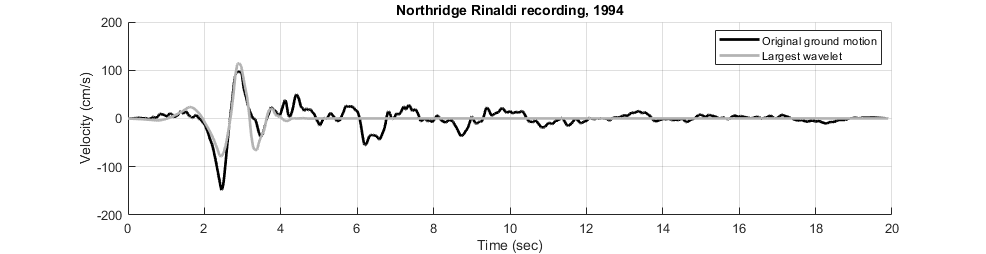
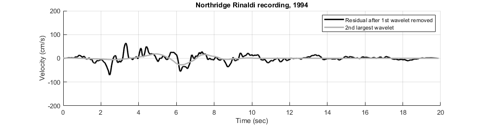

verification Pulse Decomposition of OpenSeismoMatlab
Contents
- Reference
- Description
- Earthquake motion
- Perform pulse decomposition of earthquake motion
- Plot the velocity time histories (initial motion and largest pulse)
- Plot the velocity time histories (residual motion and 2nd largest pulse)
- Sum the 10 largest pulses extracted from the input motion
- Plot the velocity pulse using 10 largest pulses
- Plot the final residual ground motion
- Copyright
Reference
Baker, J. W. (2007). Quantitative classification of near-fault ground motions using wavelet analysis. Bulletin of the seismological society of America, 97(5), 1486-1501.
Description
The velocity pulse of a strong motion velocity time history is extracted according to Figure 4 of the above reference. The velocity time history of the fault-normal component of the 1994 Northridge, Rinaldi, recording is considered. The Daubechies wavelet of order 4, shown in Figure 2c, is used as the mother wavelet. Initially, the largest velocity pulse is identified (Figure 4b). For the ground motion under consideration, the ten largest velocity pulses are extracted, the combination of which is shown in Figure 4c, and the residual ground motion after the pulses have been removed is shown (Figure 4d).
Earthquake motion
Load earthquake data of fault-normal component of the 1994 Northridge, Rinaldi, recording
eqmotion={'RSN1063_NORTHR_RRS228.txt'};
data=load(eqmotion{1});
t=data(:,1);
dt=t(2)-t(1);
xgt=data(:,2);
Perform modification so that the initial velocity time history agrees with the plot of Figure 4a of the above reference.
xgt=-xgt;
Perform pulse decomposition of earthquake motion
Switch
sw='pulsedecomp';
Wavelet family of Daubechies wavelet of order 4
wname = 'db4';
Apply OpenSeismoMatlab for 1st largest pulse decomposition
S1=OpenSeismoMatlab(dt,xgt,sw,wname);
Plot the velocity time histories (initial motion and largest pulse)
Initialize figure
figure('Position',[7.4,508.2,1517.6,253.8],... 'InnerPosition',[7.4,508.2,1517.6,253.8],... 'OuterPosition',[0.2,501,1000,343.2]) hold on % Plot the velocity time history of the initial ground motion plot(t,xgt, 'Color', [0 0 0], 'LineWidth', 2) % Plot the time history of the largest velocity pulse plot(t,S1.pulseTH, 'Color', [0.7 0.7 0.7], 'LineWidth', 2) % Finalize figure hold off grid on title('Northridge Rinaldi recording, 1994') ylim([-200,200]) xlim([0,20]) xlabel('Time (sec)') ylabel('Velocity (cm/s)') legend({'Original ground motion','Largest wavelet'}) drawnow; pause(0.1)
Apply OpenSeismoMatlab for extracting the 2nd up to 10th largest pulses from the residual motion after extracting the 1st pulse as above
Sout{1}=S1;
for i=2:10
S1=OpenSeismoMatlab(dt,S1.resTH,sw,wname);
Sout{i}=S1;
end
Plot the velocity time histories (residual motion and 2nd largest pulse)
Initialize figure
figure('Position',[7.4,508.2,1517.6,253.8],... 'InnerPosition',[7.4,508.2,1517.6,253.8],... 'OuterPosition',[0.2,501,1000,343.2]) hold on % Plot the velocity time history of the residual ground motion plot(t,Sout{1}.resTH, 'Color', [0 0 0], 'LineWidth', 2) % Plot the time history of the largest velocity pulse plot(t,Sout{2}.pulseTH, 'Color', [0.7 0.7 0.7], 'LineWidth', 2) % Finalize figure hold off grid on title('Northridge Rinaldi recording, 1994') ylim([-200,200]) xlim([0,20]) xlabel('Time (sec)') ylabel('Velocity (cm/s)') legend({'Residual after 1st wavelet removed','2nd largest wavelet'}) drawnow; pause(0.1)
Sum the 10 largest pulses extracted from the input motion
sum10=zeros(size(S1.pulseTH)); for i=1:10 sum10=sum10+Sout{i}.pulseTH; end
Plot the velocity pulse using 10 largest pulses
Initialize figure
figure('Position',[7.4,508.2,1517.6,253.8],... 'InnerPosition',[7.4,508.2,1517.6,253.8],... 'OuterPosition',[0.2,501,1000,343.2]) % Plot the time history of the largest velocity pulse plot(t,sum10, 'Color', [0.7 0.7 0.7], 'LineWidth', 2) % Finalize figure grid on title('Northridge Rinaldi recording, 1994') ylim([-200,200]) xlim([0,20]) xlabel('Time (sec)') ylabel('Velocity (cm/s)') legend({'Sum of 10 largest pulses'}) drawnow; pause(0.1)

Plot the final residual ground motion
Initialize figure
figure('Position',[7.4,508.2,1517.6,253.8],... 'InnerPosition',[7.4,508.2,1517.6,253.8],... 'OuterPosition',[0.2,501,1000,343.2]) % Plot the time history of the largest velocity pulse plot(t,S1.resTH, 'Color', [0 0 0], 'LineWidth', 2) % Finalize figure grid on title('Northridge Rinaldi recording, 1994') ylim([-200,200]) xlim([0,20]) xlabel('Time (sec)') ylabel('Velocity (cm/s)') legend({'Final residual ground motion'}) drawnow; pause(0.1)
Copyright
Copyright (c) 2018-2023 by George Papazafeiropoulos
- Major, Infrastructure Engineer, Hellenic Air Force
- Civil Engineer, M.Sc., Ph.D.
- Email: gpapazafeiropoulos@yahoo.gr